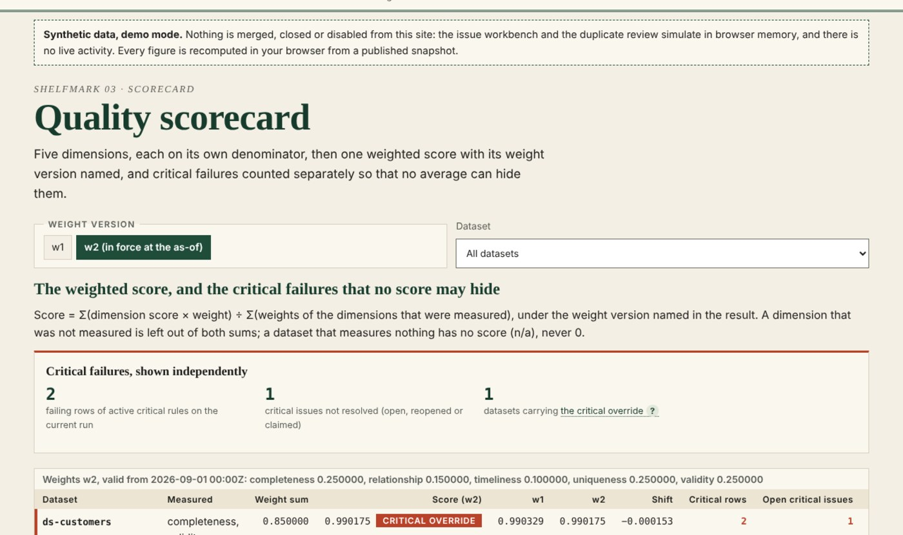
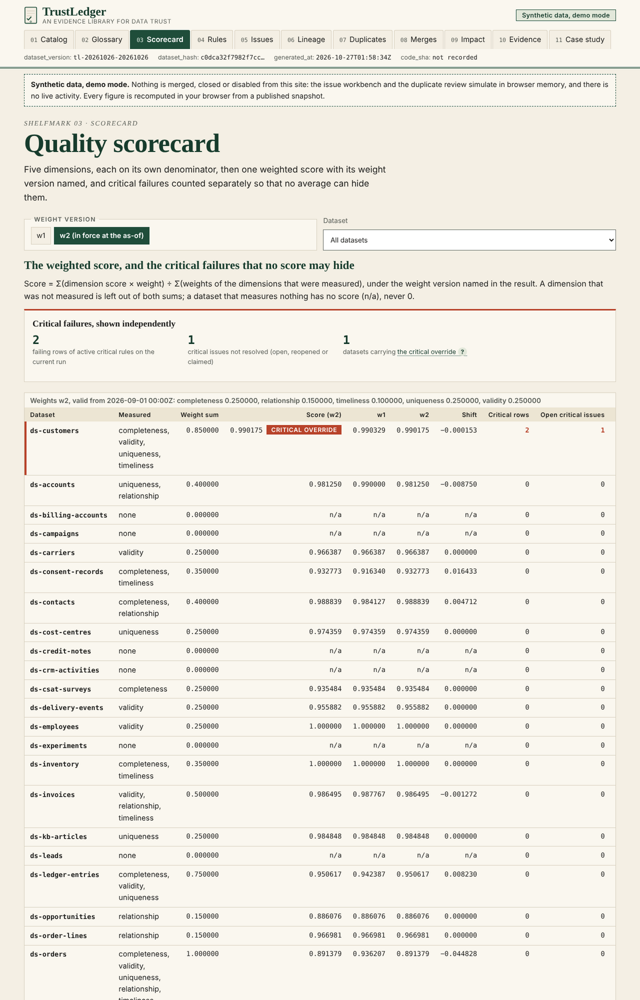
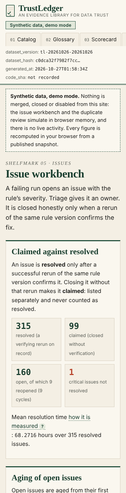

Dashboard · Data governance · FastAPI · React · 2026-10
Which Data Issues Should Be Fixed First, and Who Is Accountable?
TrustLedger: a data-governance evidence library where every quality figure keeps its denominator. Completeness, validity, uniqueness, relationship integrity and timeliness are measured separately and never averaged into silence: a weighted score carries its weight version, and an open critical key failure stays visible however high the score. Definitions and rule weights are versioned rather than rewritten, an issue counts as resolved only after a successful rerun, lineage keeps declared, observed and inferred edges apart, and identity matches are proposed with their uncertainty and merged only by a person, reversibly. The known answer: 100 customer rows with 5 missing e-mails give 95% completeness; of the 95 populated, 90 pass, so validity is 90 of 95 populated-only and 90 of 100 overall, both labelled. Synthetic data; project 07 of the Business Data Lab.

- Problem
- The data-quality dashboard reports one green number. Behind it a critical customer key is missing on hundreds of rows; validity is quoted as 90% without saying whether the blanks were…
- Role
- Built and written by Rishit Raj Mathur; the case study names its sources and checks.
- Tools
- Python 3.11 (exact rationals; no floating point in a published figure), PostgreSQL 16 (versioned definitions, rules and weights; append-only runs, decisions and merges), FastAPI 0.162 (commands with idempotency keys, 401/403/409/422 contracts; merges need a reviewer other than the proposer), SQL reference recomputation of every metric, TypeScript + React 18 + Vite, Playwright 1.55 (journey, 4 widths, 200% zoom), GitHub Actions (postgres:16 service, hosted runners only), 405 Python tests, 2,539 TypeScript golden and snapshot checks plus 58 review checks, 80 browser tests
- Status
- Case study with a live demo
- Evidence
- Open TrustLedger · Code on GitHub

Everything is synthetic: the 40 datasets, 420 fields, 18 owners, 60 rules, 4,609 rule runs, 574 issues, 160 lineage edges, 45 metric versions, 2,000 customer records, 400 match candidates and every figure come from a seeded generator whose designed relationships and twelve injected defects are published in an injection manifest, together with the two code changes its author made after seeing earlier draws (a stray draw removed, the window kept free of rule changes around the weight change widened from 7 to 14 days); nothing was re-drawn on its value and the match truth lives only in the manifest. The public site is a static demo over a published snapshot; the issue workbench and the duplicate review simulate their actions in browser memory, and nothing is merged, closed or disabled from them. The transactional behaviour (registering datasets, running rules, opening, claiming and resolving issues, versioning definitions, proposing, approving and reversing merges) is verified separately on GitHub-hosted runners against a transient PostgreSQL. Built from a written specification by a coordinating session delegating bounded work to implementation subagents; not a measurement of any real organisation.
01The problem
The data-quality dashboard reports one green number. Behind it a critical customer key is missing on hundreds of rows; validity is quoted as 90% without saying whether the blanks were counted; a rule's weight was changed last month so the score moved without anything in the data changing; an issue was closed by switching the rule off; a lineage diagram shows edges that were guessed; and two customers with the same name and address were merged by a script. Nobody can say which issue to fix first or who owns it.
TrustLedger fixes the measurement first: each dimension on its own denominator, both validity denominators labelled, null foreign keys counted rather than dropped, weights and definitions versioned with reasons, a critical override that no average can hide, resolution that requires a rerun, lineage styled by its evidence, and identity merges that a person approves and can reverse.
02What I built
Two implementations of one contract, checked against a hand calculation and each other.
- The contract: five quality dimensions each on its own documented denominator, with validity reported populated-only and over all eligible rows under both labels and a whitespace policy under which a trimmed-empty string is missing; null foreign keys counted separately from mismatches; a weighted score that names its weight version and leaves unmeasured dimensions out of both sums; a critical override that stays beside the score whenever an active critical rule fails or a critical issue is open; weights and definitions that are versioned with a reason and an approver and never rewritten in place; an issue that is resolved only after a successful rerun of the same rule version, otherwise claimed, with a disabled rule's history kept readable; lineage with declared, observed and inferred edges kept apart, an observed edge requiring an observation instant, and coverage counted over distinct declared pairs; identity candidates stored once in canonical order with their uncertainty, approved only by a reviewer other than the proposer and reversible; and timeliness judged on local schedules with daylight-saving transitions in seven zones.
- A known-answer fixture written first: 100 customer rows with 5 missing e-mails (two of them whitespace-only) give completeness 0.950000; 90 of the 95 populated pass the format rule, so validity is 0.947368 populated-only and 0.900000 over all eligible rows; uniqueness 0.010204 by group and 0.020000 by row; relationship integrity 0.945946 (35 of 37) with three null or empty foreign keys counted apart under the whitespace policy; timeliness 0.750000; the dataset scores 0.963932 under the weight version in force and 0.958116 under the earlier one, with the critical override beside both; ten customer records with five candidates give a match precision of 0.666667 against a truth that only the verification layer reads; plus a rejected variant and an empty variant. A standard-library script reproduces all 805 checks from the records, including seven pinned timeliness cases (a refresh made on time for today, a pending window, the hour that repeats when clocks go back).
- The Python domain, PostgreSQL schema and FastAPI commands: register a dataset, run a rule, open, claim, reopen and resolve issues, correct rows and record a refresh as append-only versions, move a definition from draft to reviewed to published as new versions, propose, approve and reverse a merge with the actor resolved against the owners register (owners, rules, weights and lineage observations enter through the versioned seed, not through a command); 405 tests on a GitHub-hosted runner against PostgreSQL 16, including the adversarial scenarios the specification names, and an independent SQL recomputation that agrees with the domain on the fixtures and the snapshot.
- The static site: the same contract in TypeScript with rational arithmetic only, a catalogue, a glossary of versioned definitions, the scorecard with its weight-version switch and the override, rule detail with comparable runs, the issue workbench, the lineage explorer, the duplicate review, merge history, an impact preview over declared edges, an evidence page and the case study; 2,539 golden and snapshot checks against the Python domain at three as-of instants under both weight versions, including time-zone probes around every 2026 daylight-saving transition in seven zones, 58 review-finding checks and 80 Playwright tests at four widths and 200% zoom.
- A deterministic synthetic world: 84 daily runs from 2026-07-13, six source systems, two weight versions with the change on 2026-09-01, three inactive owners, and twelve injected defects (a critical failure under a high score, a disabled rule's vanishing history, a shared name-and-address pair, null foreign keys silently excluded, a weight change without a version, an irreversible merge, an inactive owner counted as covered, inferred lineage shown as observed, an issue closed without a rerun, a duplicate pair stored both ways, a definition rewritten in place, a denominator change between compared runs) published with how each must be handled.
03How it was built
- 01
The known answer before any volume
One hundred eligible customer rows, five without an e-mail: completeness 0.950000. Of the ninety-five populated, ninety pass the format rule: validity 0.947368 populated-only and 0.900000 over all eligible rows, both on the page with their labels. A critical key rule fails on two rows, so the dataset's weighted score, above 0.95, is shown with the override beside it. A standard-library script reproduces every figure from the records before the application exists.
- 02
A score carries its weights
The weighted quality score names the weight version it was computed with. Changing a weight creates a new version with a reason and an approver; two runs are compared only when their eligibility definition is the same, and the page says when it is not.
- 03
Resolved means re-run
An issue closed without a successful rerun of the same rule version is listed as claimed, never resolved, and disabling the rule is not repair: the rule's history stays readable and its open issues stay open.
- 04
Two modes, disclosed
Mode A is the backend on a GitHub-hosted runner with a transient PostgreSQL. Mode B is the public site over a published snapshot; the issue workbench and the duplicate review simulate their actions in browser memory, and nothing is merged or closed from them.
04Results
The scorecard on the synthetic snapshot (as of 2026-10-05 under weight version w2; the dataset with the open critical key failure is first, with both weight versions and the shift beside the score):

The issue workbench on a phone:

What the data supports. Under the weight version in force, ds-customers scores 0.990175 (0.990329 under the earlier one) while its critical key rule fails on two rows and one critical issue is open, so the override sits beside the near-perfect score. Three inactive owners leave five of the forty datasets without an accountable owner: coverage 0.875000. The same rows and rules score differently under the two weight versions: 13 of the 29 scored datasets differ, seven by 0.005 or more and the largest by −0.167477; no rule version changed within fourteen days of the weight change on 2026-09-01, though two rules were disabled in that window. Of 574 issues, 315 are resolved by a verifying rerun, 99 were closed without one and are listed as claimed, and 160 are open; the 64 oldest unresolved issues are all claims, which the generator designed and the site reports. Issues owned by the Data Platform team resolve in a mean of 34.4202 hours against 86.1833 for the others. Of 80 declared lineage edges 58 were observed (coverage 0.725000), 12 observed edges are undeclared, and 10 inferred edges are drawn dashed and never counted. Twenty-three of thirty published metrics pass the definition checklist (0.766667) and fifteen carry more than one version. Of 400 match candidates 220 were reviewed by a person, 174 approved and 46 rejected, with 15 approvals reversed; against the truth that only the manifest holds, 172 of the 174 approvals are right, a precision over approvals of 0.988506 reported as drawn (the contract's reviewed-correct share, true matches among the 220 reviewed candidates, is 185 of 220 = 0.840909; the analysis also reports a decision-agreement share of 205 of 220, counting correct rejections too). These are the generator's designed relationships and the one-draw realisation, published in its manifest and found by the site; they are not findings about any real organisation.
Found by review, then fixed. An independent reviewer, briefed to disprove the page, confirmed eight defects: a refresh made on time for today counted as late until the day's deadline passed; disabling a failing critical rule before an issue was opened made the override disappear; the backend trusted the actor headers without checking the owners register, so a proposer could approve their own merge; the three implementations disagreed on non-ASCII whitespace in e-mail patterns; the uniqueness score ignored null keys; a self-loop lineage edge passed the domain and failed the database; no application command could correct rows, so only timeliness issues could be resolved; and this page named commands that do not exist. All of it is fixed on the branch and live: timeliness has an on-time, pending and late state pinned in the fixture; a disabled rule's live failure is carried until a passing rerun; actors are resolved against the register and self-review is refused; patterns that depend on a regex dialect are refused and the data uses explicit classes; uniqueness counts null keys; self-edges are malformed; rows and refreshes are corrected through append-only commands; and the regression tests run in Python, SQL, TypeScript and through the API, with the reviewer's own probes agreeing across all three. The golden relationship figure moved from 36 of 38 to 35 of 37 when an empty-string foreign key was pinned as missing; no snapshot figure moved.
Not built yet: the impact preview follows declared edges only and does not predict movement, the simulated rerun re-measures a whole rule because seeded issues carry no record identifiers, and multi-system identity chains are unpinned by the fixture.
05What I'd do next
- Add the screens listed as not built on the site and an impact preview driven by the observed lineage graph.
- Pin daylight-saving timeliness edges and multi-system identity chains in the fixture.
- Projects 08 to 10 of the lab follow the same gates.